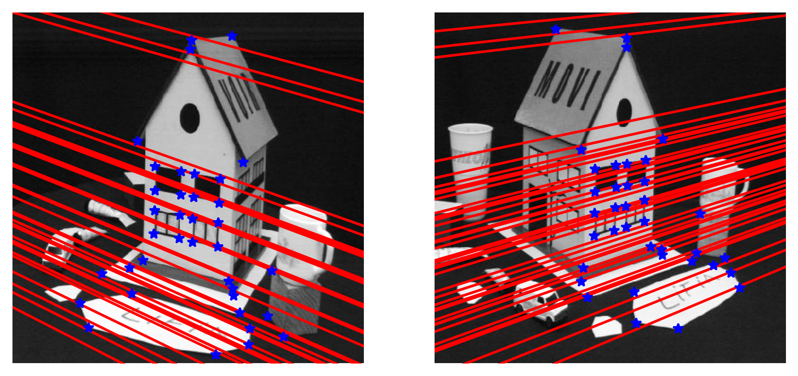
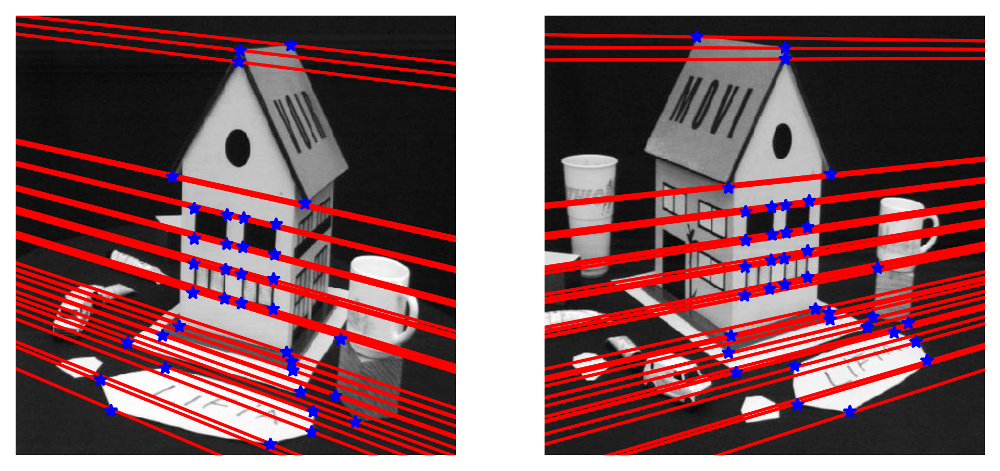
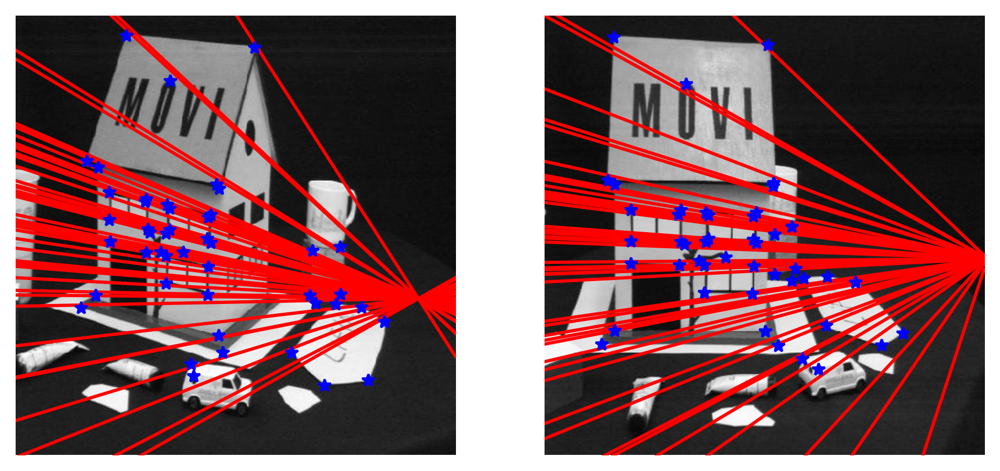
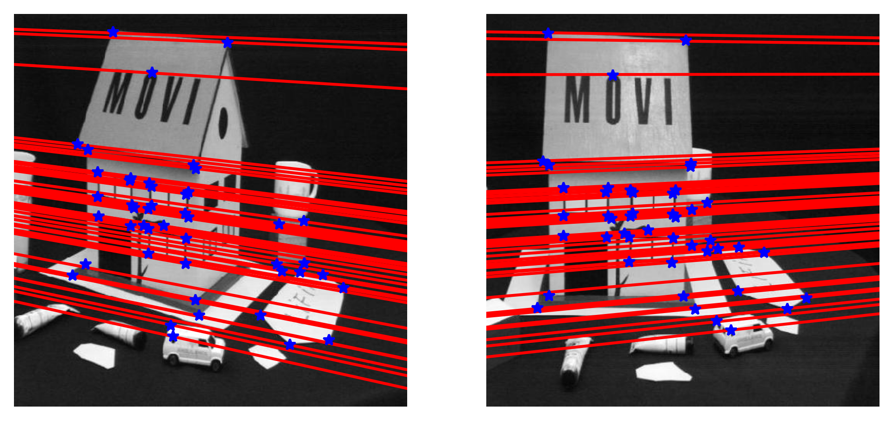

Return to Assignment 4 Overview
The implementations for P1 parts a, c and e can be found in the submitted p1.py file.
To calculate the fundamental matrix, I started by creating a matrix A using the corresponding points from the two images. For each pair of points, I extracted their x and y coordinates and added a row to A using the epipolar constraint. Once I had constructed A, I used np.linalg.svd(A) to perform singular value decomposition. I took the last row of V transpose, which corresponds to the smallest singular value, and reshaped it into a 3x3 matrix.
Since the fundamental matrix needs to have a rank of 2, I then performed SVD on the resulting matrix. I set the smallest singular value to zero and multiplied the matrices back together to get the final fundamental matrix.
These are the fundamental matrices I calculated for the two datasets using the linear least-squares eight-point algorithm:
Set 1
F =
[[ 1.55218081e-06 -8.18161523e-06 -1.50440111e-03]
[-5.86997052e-06 -3.02892219e-07 -1.13607605e-02]
[-3.52312036e-03 1.41453881e-02 9.99828068e-01]]Set 2
F =
[[-5.63087200e-06 2.74976583e-05 -6.42650411e-03]
[-2.77622828e-05 -6.74748522e-06 1.52182033e-02]
[ 1.07623595e-02 -1.22519240e-02 -9.99730547e-01]]These are the fundamental matrices I calculated for the two datasets using the normalized eight-point algorithm:
Set 1
F =
[[ 7.69564303e-07 -6.28660670e-06 1.04182564e-04]
[-5.78773950e-06 -4.01132413e-07 -7.58583623e-03]
[-1.01011620e-03 1.04176782e-02 1.72255185e-01]]Set 2
F =
[[-1.76258641e-07 2.93495132e-06 -1.82141740e-04]
[ 4.23387000e-06 3.75025436e-07 8.18992840e-03]
[ 2.75815126e-04 -9.94284870e-03 -2.94298661e-03]]To calculate the distance between the points and their corresponding epipolar lines, I started by looping through each pair of points. For each point in the first image, I used the fundamental matrix and the corresponding point in the second image to calculate its epipolar line. I then extracted the three coefficients of the line and used the point-to-line distance formula: d = |ax + by + c| / √(a² + b²)
I added each calculated distance to a list and once all of the points had been checked, I used np.mean to return the average distance. To calculate the distance in the other image, I swapped the point sets and used the transpose of the fundamental matrix.



